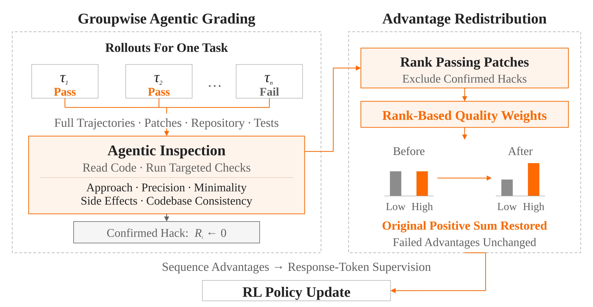
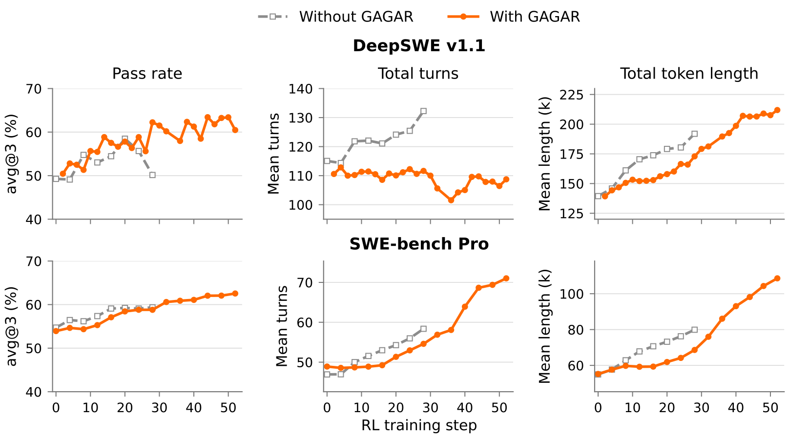
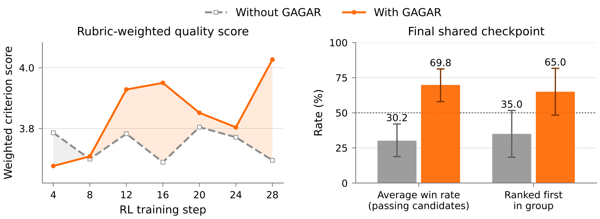
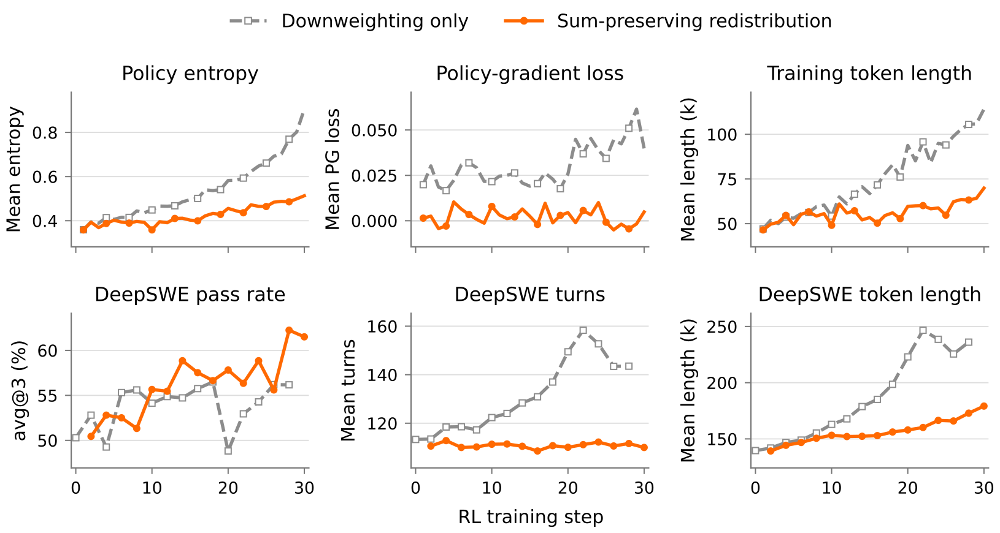

代码Agent的RL训练有个标准套路：轨迹跑完测一把，通过测试给1，没通过给0。GRPO算优势时，同组里所有通过的轨迹拿一模一样的优势值。任务是学会了，但一个直击根因的干净补丁和一个到处打补丁、改无关代码的糙实现，在梯度眼里毫无区别。
小米LLM Core这篇Gagar要补的就是这块：让通过测试的代码也分出三六九等，信用按质量重新分配。下面拆开打分器、保和重分配和三组实验。
每个任务的所有rollout放进一个共享工作区：任务描述、仓库、完整轨迹、提交的补丁、测试输出全在里面。打分器联合检查同一任务的不同实现，必要改动和多余复杂度一比就现形，低效的问题解决过程也藏不住。
打分器本身是SFT训出来的智能体，线上用的是MiMo-V2.6-Pro的pre-RL SFT检查点。最初用Claude Opus 5，一组平均要2000秒，而且必须等组内所有rollout跑完才开始，拖慢训练；SFT打分器降到约600秒，还保持不错的准确率，再配合部分rollout调度，打分和rollout收集异步跑。
打分看五个维度：方案合适度、实现精确度、改动最小化、副作用、代码库一致性。先查通过的解法有没有靠泄露答案或外部答案，实锤的奖励直接清零并排除出排名；剩下的按五个维度1到5打分，分三档：T1是无严重过程问题、无未解决回归的强实现，T3是有确认的无关重写或测试特异workaround，中间是T2。加权分W_i=0.30·s_app+0.25·s_prec+0.20·s_min+0.15·s_side+0.10·s_style。

| 维度 | 高质量信号 | 低质量信号 |
|---|---|---|
| 方案合适度 | 解决根因，策略得当 | 头痛医头，策略根本错误 |
| 实现精确度 | 改动位置正确，行为覆盖完整 | 到处加特例，冗余兜底逻辑 |
| 改动最小化 | 只做必要的改动，限定任务范围 | 无关重构，多余辅助函数或分支 |
| 副作用 | 周边行为保持，公开接口稳定 | 改动无关行为，核心路径引入新风险 |
| 代码库一致性 | 复用已有抽象，风格注释一致 | 临时机制，风格或注释不统一 |
质量因子f_i到手，最直接的用法是给通过轨迹的优势乘上f_i。但这会凭空拿走一部分正信用：原始优势总和为零，降权后正优势总量D=Σ_{i∈P}(1−f_i)A_i被抹掉，负优势总量不变，正负失衡，成功轨迹的强化被相对削弱。
Gagar的做法是把拿走的信用还回去：设通过组原始正优势和为S₊，用公共缩放因子λ=S₊/Σ_{j∈P}f_j A_j，对通过轨迹做A*_i=λ·f_i·A_i，失败轨迹优势不动。这样通过子集内部是零和变化，组均值仍为零，失败轨迹的优势没被碰过。
因为同一个λ乘给所有通过轨迹，降权建立的质量权重比例原样保留：A*_i/A*_j=f_i/f_j。谁的因子高于通过组平均，谁就从重分配里净赚信用；低于平均的就净交信用。等价的奖励空间写法也成立，直接给通过轨迹奖励乘f_i再做均值中心化会改变失败轨迹优势、打乱通过组内比例，还可能让通过轨迹拿到负优势，不是等价操作。
实现上有保险：λ上限λ_max=1.5，超过就截断再做组中心化；Flash配置f_runner=0.9、f_min=0.4、f_max=0.85、f_low=0.2。打分结果不可用就回退到原始结果优势，基础设施坏掉的轨迹先遮蔽再算组统计。
实验从MiMo-V2.6-Flash（310B总量、15B激活）和Pro（1.02T总量、42B激活）的pre-RL SFT检查点起步。主对照是Flash的代码单任务RL：batch 128，每prompt 16条rollout，token-mean损失聚合。评测用DeepSWE v1.1和SWE-bench Pro，看通过率、平均交互轮数、平均token长度。
二进制奖励基线在28步被叫停：DeepSWE通过率从20步的58.5%掉到50.2%。Gagar在28步做到62.2%，领先12.1个百分点，继续训到44步峰值63.4%。SWE-bench Pro上基线从16步起卡在59%不动，Gagar一路涨到52步的62.5%。
效率side同样好看：不用Gagar，DeepSWE轨迹长度疯长、大量截断；用了之后轮数基本稳定、token长度涨得慢，每个共享检查点上轮数和token都更少。SWE-bench Pro上平均轮数从58.4降到54.6，token长度从79.9k降到68.6k。

通过率之外，质量到底变好没？在30个DeepSWE任务的固定抽样上做审计：每组最多三条rollout（含失败），匿名打乱顺序，用与线上打分器不同的Claude Opus 5联合评审轨迹、补丁和测试输出，按附录的打分表算加权分，再从组内排名算胜率。
最终共享检查点上，Gagar平均质量分4.03对3.70，通过候选里的平均胜率69.8%，65.0%的组里排第一。提升最明显的正是实现精确度、改动最小化和副作用避免这三项：补丁更准、更小、更不惹事。

保和这一步是不是真必要？对照组只做质量降权，不恢复被拿走的正信用。结果很直观：策略熵从0.359涨到0.905（完整方法只到0.513），训练rollout平均长度从47.1k涨到114.1k token（完整方法只到69.9k），策略梯度损失均值0.0304对0.0021。
DeepSWE通过率也坐过山车：18步56.5%，20步掉到48.8%，28步回升到56.2%，同期完整方法是62.2%。交互轮数和token长度在22步冲到158.3轮、246.7k token的高峰。结论：降权不保和，正负信用失衡，训练往熵增和轨迹膨胀的方向飘。

最后把Gagar装进Flash和Pro的工业级混合任务RL：每次更新1568个prompt，每prompt 16条rollout，打分和重分配只作用于其中符合条件的代码任务组。
DeepSWE上Pro做到71.9%，超过2.8T的Kimi K3（69.0%），参数量还小得多；SWE-bench Pro上62.7%超过GPT-5.6 Sol的60.5%。Flash分别是67.9%和60.9%。
| 模型 | DeepSWE | SWE-bench Pro |
|---|---|---|
| K3 | 69.0 | 63.3 |
| GPT-5.6 Sol | 73.0 | 60.5 |
| Claude Opus 5 | 74.0 | 79.9 |
| MiMo-V2.6-Flash | 67.9 | 60.9 |
| MiMo-V2.6-Pro | 71.9 | 62.7 |
参考：https://arxiv.org/html/2609.32577v1